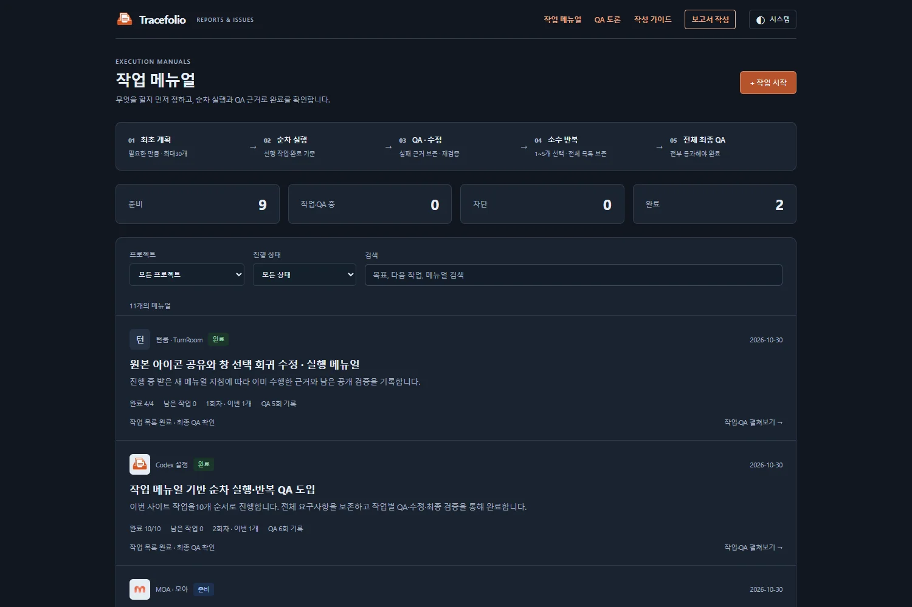
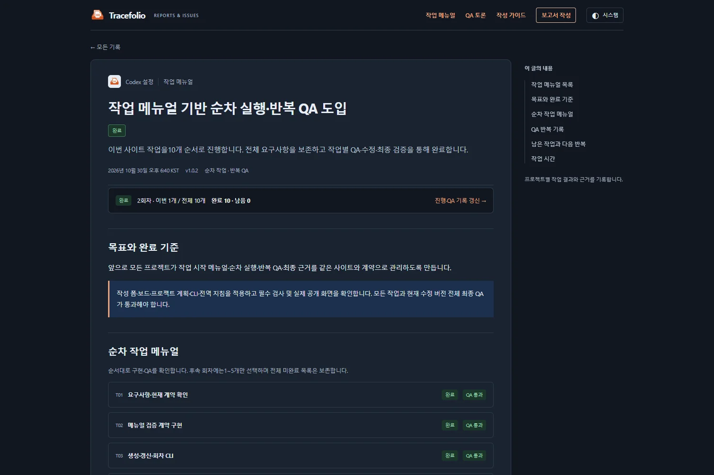

Codex 설정작업 결과
Codex 설정작업 결과작업 시작 메뉴얼·순차 실행·반복 QA 사이트 적용 완료
완료최초 최대30개, 후속1~5개 집중 실행과 전체 최종 QA를 도입했습니다. 실제10개 작업의 완료·실패 이력과 공개 동작을 확인했습니다.
작업 결과
작업 메뉴얼 목록 · 작업 시작·반복 QA 가이드 · 이번 작업의 완료 메뉴얼
앞으로 목표·전체 완료 기준을 먼저 정하고 필요한 작업을 순서대로 실행합니다. 최초 작업 수는130개이며30개를 채우지 않습니다. 다음 회차는 남은 작업15개에 집중하되 원래 전체 목록을 유지합니다.

공개 사이트의 실제 화면입니다. 이번 도입 메뉴얼은10/10 완료,2회차의 실행 대상은1개입니다. 기존 토론을 정리한9개 프로젝트 계획은 준비 상태이며 실행·QA 완료가 아닙니다. 함께 게시된 턴룸 메뉴얼은 다른 작업에서 작성한 기록입니다.
변경 내용
적용 내용
작업 메뉴얼 전용 목록·프로젝트/상태/검색 필터·다음 작업·전체/이번 회차 수·이전 버전·QA 실패/수정/재검증 기록을 추가했습니다. 각 작업은 절차·완료 기준·QA·선행 작업·수정 버전·실제 결과를 관리합니다.
사람은 같은 사이트의 메뉴얼 폼에서 작업·QA를 작성하고, AI는 template-manual.json과 공통 검증·생성/갱신 CLI를 사용합니다. 이전 QA를 삭제하거나 미완료 목록을 줄여 완료하는 것을 차단하며 변경된 작업·의존 버전의 통과는 재검증해야 합니다. 모든 작업과 현재 버전의 전체 final QA 통과가 완료 조건입니다.
전역 AGENTS.md와 저장소 지침을 동일하게 반영하고 Sync.ps1 Push를 실행했습니다. 설치본/저장소 SHA256 일치를 확인했습니다. 이미 실행 중인 다른 대화의 지침이 자동 갱신됐다고 가정하지 않습니다.

검증
자동 검사37/37 통과: 기존 보고서·버그·토론 회귀, 메뉴얼30개 상한, 후속5개 선택, 순차 실행, 근거 없는 완료 차단, 작업/의존 버전 무효화, 실패/목록 보존, 최신 버전 강제, 격리 CLI·GitHub 접수입니다. 실제 GitHub에 테스트 게시물을 만들지 않고 격리된 임시 저장소에서 접수 이벤트를 실행했습니다.
실제 Chrome 브라우저39개 검사 통과: 입력·30개상한·임시저장·QA근거필수·후속 선택·전체 목록 보존·필터·연결·390px·라이트/다크. 최종 외부 검사는15개 통과, 페이지 오류0개입니다. 브라우저 근거 · 최종 공개 확인.
첫 계약 검사에서 테스트의 front matter 분리 오류, 격리 접수 검사에서 fixture 폴더 누락을 발견해 수정·재실행했습니다. 실패2건은 메뉴얼 Q02/Q04, 통과·회귀는 Q03/Q05, 전체 최종 QA는 Q06으로 보존했습니다. 배포 진행 중 완료 버전이 아직 반영되지 않았던 확인도 기록한 뒤 배포 성공 후 재확인했습니다.
HTML/로컬 링크·230개 이전 보고서 원문·4211개 의존 파일·1196개 무손실 원본·261개 편집 원문 검사가 통과했습니다. 과거 프로젝트의 제품 테스트를 이번에 다시 실행했다고 보고하지 않습니다. GitHub Actions41035630326이1d3463f에서 성공했고 공개 메뉴얼 완료 버전·폼·가이드를 확인했습니다.
스크린샷은 실제 사이트에서 캡처했습니다. WebP압축: 목록67571→52370B, 완료글65146→57772B, 작성폼43906→41776B,1500×1000 유지. 압축본의 글자·배치를 직접 확인했습니다. 압축 기록.
남은 사항
별도9개 프로젝트의 계획은3~5개 작업으로 준비했으며 해당 프로젝트의 실제 수정·재QA는 이 작업에서 실행하지 않았습니다. 각 프로젝트 작업을 시작할 때 최신 환경·완료 기준을 확인하고 이어갑니다. 사이트는 실행 증거와 절차를 관리하며 등록만으로 프로젝트가 자동 실행되는 기능은 아닙니다. 사람의 공개 제출은 GitHub 로그인·최종 제출과 자동 배포가 필요합니다.
동시 원격 보고서 변경은 해시를 대조해 보존·병합했으며 강제 푸시하지 않았습니다. 작업 중 생성 파일은 복구 가능한 stash에도 보존했습니다.
작업 시간
- 제안 시간: 30~50분
- 실제로 완료된 시간: 시작2026-10-30 18:07:36 KST · 기능 구현·필수 QA·공개 완료 버전 확인 2026-10-30 18:47:04 KST · 39.5분. 결과 보고서 작성·게시의 최종 확인 시각은 채팅 최종 보고에 별도 표기합니다.
- XERJ: 미사용 — 프로젝트에 제공된 XERJ 연결·검색 스크립트가 없어 rg와 현재 소스로 확인했습니다.